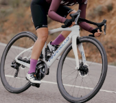
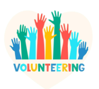

Three images that best describe what i like to do
 
I like Running, Cycling, and Swimming because its good for both my physical and mental health.
I like Learning New Skills such as Online courses in data science, AI, or web development.
I like Reading (Non-technical)such as Fiction, philosophy, or biographies that are inspiring.
I love Gardening or Nature Walks this helps with Digital detox + grounding experience.
I love Volunteering (Tech for Good) and Use my skills to help non-profits or community projects.
I try to do Coding side project + Blogging about it (build + teach). This is work in progress. Not yet there
Listening to Podcasts on data or tech (health + learning)